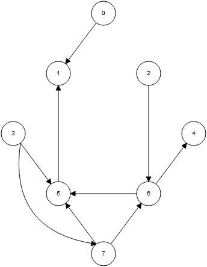
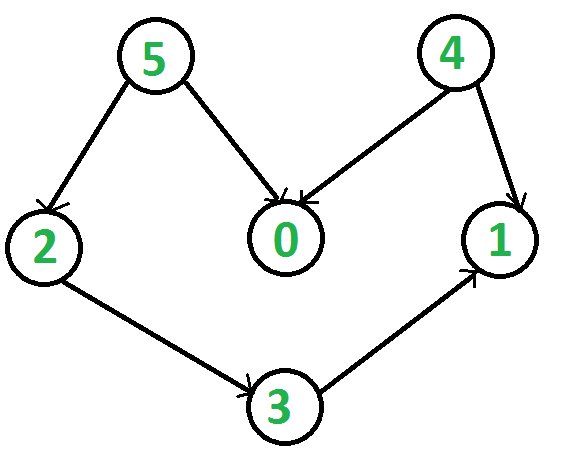

Graph algorithms questions
Which type of graph traversal is typically used to find a path with the minimal number of edges?A. Breadth-first search
B. Depth-first search
Breadth-first search.
Below is the array of adjacency lists for the directed graph pictured to the right.

Unweighted directed graph. Source: cs.usfca.edu/~galles
0: 1 1: 2: 6 3: 5, 7 4: 5: 1 6: 4, 5 7: 5, 6 (the first number after the : is the first neighbor, for example 3's first neighbor is 5)Suppose you call dfs(3). List the marked vertices in the order that they are marked.
3, 5, 1, 7, 6, 4
Note that the order in which we visit a vertex's neighbors depends on their order in the adjacency list.
Suppose you call bfs(3). List the marked vertices in the order that they are marked.
3, 5, 7, 1, 6, 4
Note that the order in which we visit a vertex's neighbors depends on their order in the adjacency list.
Give a topological sort of this graph (list the vertices).
5, 4, 2, 0, 3, 1 (there are many correct answers)
Note that any directed acyclic graph can be topologically sorted.
There does not need to be a vertex from which all others are reachable.

Directed acyclic graph. Source: geeksforgeeks.org